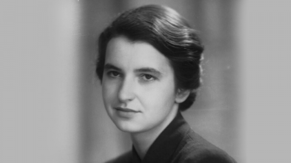
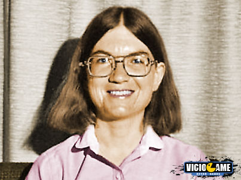

Personalidades
Você sabia que mulheres sempre foram muito presentes na área da informática? Confira abaixo grandes figuras femininas e suas principais realizações nesse ramo e, assim, se prepare para o jogo Quem Sou Eu a seguir:
Rosalind Franklin
⠀⠀⠀⠀Rosalind Franklin foi uma mulher biofísica muito injustiçada. Ela foi pioneira nas pesquisas de biologia molecular e foi responsável por conseguir a “Photo 51”, a primeira imagem do DNA, feita por difração do raio-x. Além de ter descoberto o formato helicoidal do DNA e a estrutura molecular do carvão e do grafite. Seu reconhecimento foi impedido, marcando a dificuldade enfrentada pelas mulheres na ciência. Entretanto, ele veio só após sua morte, depois de cartas provarem que ela era a responsável pelas descobertas já citadas. Franklin é um grande exemplo de resistência e figura feminina, provando mais uma vez que mulheres sempre estiveram presentes em grandes descobertas mundiais.
Carol Shaw
⠀⠀⠀⠀Essa cientista em especial, vem para quebrar os estereótipos de mulheres dentro do mundo dos Games. Carol Shaw foi a primeira mulher desenvolvedora de jogos eletrônicos no mundo, criou o 3-D Tic-Tac-Toe baseado no tradicional jogo da velha e na sequencia lançou seu jogo mais famoso: River Raid. Além de receber prêmios importantes, a cientista foi essencial para a luta pela igualdade de gênero nessa área.
Ada Lovelace